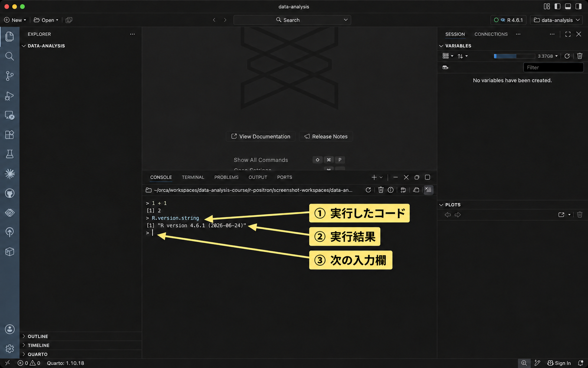

{kind=link}
{kind=link}
{kind=link}
R.version.stringRとPositronのセットアップ
RとPositronの導入から、CSVの読み込み、保存したスクリプトの再実行まで
1 目的
この授業では、Rでデータを読み込み、集計や分析を行います。Rとは、統計計算や作図のためのプログラミング言語です。Positronは、Rのコードを書き、実行結果や図を確認するためのアプリです。パソコンに両方をインストールして使います。
このページでは、成人1,000人の架空の調査データを使い、年齢の集計と作図まで試します。最後に、保存したコードを開き直して、同じ結果を出せることを確認しましょう。ブラウザでこのページを開き、Positronと並べると、コードをコピーしながら進められます。
2 RとPositronの導入
使っているOSのタブを開き、R、Positronの順に導入してください。既にRを使っている人も、下の手順で最新版に更新してください。 ダウンロード先は英語ですが、選ぶファイルと操作は以下で説明します。配布版と対応OSは2026年9月22日に確認しました。
- 「設定」→「システム」→「バージョン情報」で、Windowsのバージョンと「システムの種類」を確認します。以下はWindows 10以降のx64のパソコンを前提にしています。ARMベースと表示される場合は、使用するRとパッケージの対応を教員と確認してください。
- R-4.6.1 for Windows（英語）を開き、先頭の「Download R-… for Windows」からインストーラー（
.exe）を保存します。保存したファイルを開き、画面に従ってインストールします。インストール先などは通常、初期設定のままで構いません。 - Download Positron（英語）を開き、Windowsのx64用「User install」を保存して、インストールします。公式ページの「Windows setup」に案内されているVisual C++ Redistributableも確認し、未導入ならリンク先のx64用をインストールしてください。
- スタートメニューからPositronを起動します。既にPositronを開いていた場合は、作業を保存してから終了し、起動し直します。
Rの更新では、以前のRが残る場合があります。後の手順で、Positronが新しいRを使っていることを確認します。
- Appleメニューの「このMacについて」で、macOSのバージョンと「チップ」または「プロセッサ」を確認します。Apple MシリーズならApple Silicon（arm64）、IntelならIntel（x86_64、x64）の配布物を選びます。
- R for macOS（英語）を開き、「Latest release」の自分のチップに合うインストーラー（
.pkg）を保存します。R 4.6.1では、Apple Silicon用はmacOS 14以降、Intel用はmacOS 11以降が必要です。条件を満たさない場合は、作業を進める前に教員に相談してください。 - 保存した
.pkgを開き、画面に従ってインストールします。ダウンロードフォルダへのアクセスを求められた場合は許可します。 - Download Positron（英語）から、同じチップに合うmacOS用ファイル（
.dmg）を保存します。開いた画面でPositronをApplications（アプリケーション）フォルダへドラッグします。 - アプリケーションフォルダからPositronを起動します。既に開いていた場合は、作業を保存してから終了し、起動し直します。
RとPositronにはそれぞれ対応OSがあります。Positronを起動できても、上のRの条件を満たすか確認してください。
3 作業フォルダの作成
以下の図は、macOS版Positron 2026.09.1の画面をもとに操作説明を加えた参考イメージです。クリックすると拡大できます。画面に表示されるフォルダの場所は各自で異なります。実行するコードは、本文のコード枠からコピーしてください。
データとコードを同じ場所に保存するために、授業用フォルダを作ります。
- エクスプローラー（Windows）またはFinder（macOS）で、保存場所を決め、
data-analysisというフォルダを作ってください。 - Positronの「File」→「Open Folder…」で、そのフォルダを開きます。作成したフォルダを信頼するか尋ねられたら、フォルダ名を確認して信頼する選択肢を選びます。
PositronのExplorer（ファイル一覧）に、開いたフォルダの名前が表示されていることを確認しましょう。フォルダ名は DATA-ANALYSIS のように大文字で表示されることがあります。まだファイルを作っていないので、一覧が空でも構いません。
4 画面の見方
Positronでは、次の領域を使います。配置を変更している場合は、位置よりタブの名前を手がかりにしてください。
| 領域 | このページで行うこと |
|---|---|
| Explorer（ファイル一覧） | 授業用フォルダのCSVやRスクリプトを開く |
| Editor（スクリプトの編集領域） | setup-check.R にコードを書いて保存する |
| Console（コンソール） | Rに指示を入力し、実行したコードの結果やエラーを読む |
| Variables | Rに読み込んだデータや、名前を付けた計算結果を確認する |
| Plots | Rで作った図を見る |
5 Rの動かし方
Rに計算などを指示する文を、コードと呼びます。使用するRを確かめてから、Consoleに直接コードを入力して実行し、次にスクリプトに書いたコードを実行してみましょう。
使用するRの選択
Positronの画面右上を見てください。フォルダを開くと、Rが自動で起動することがあります。R 4.6.1 のようにインストールした新しい版が表示され、Consoleに入力待ちの > があれば、そのまま次の「Consoleに入力して実行する」へ進みます。
「Start Session」と表示されている場合は、そこをクリックして新しいRを選びます。古い版が動いている場合は、右上のバージョン表示をクリックし、「New Console Session…」から新しいRを選びます。Pythonなど他の言語は選びません。新しいConsoleにRの起動メッセージと > が出るまで待ってください。複数のConsoleがある場合は、以後、新しいRのConsoleを使います。Rが一覧に出ない場合は、Rが見つからない場合を確認してください。
Consoleに入力して実行する
Consoleでは、コードを入力してEnterを押すと、Rがそのコードを実行します。まず、足し算を試します。
- PositronのConsoleを見て、一番下にある
>を探してください。これは、Rが次の指示を待っている印です。 >の右側をクリックし、半角で1 + 1と入力します。>自体は入力しません。- Enterを押してください。Consoleに
[1] 2と表示されれば、計算できています。先頭の[1]は表示する値の位置を表すもので、答えは2です。 - 結果の下に、新しい
>が表示されます。次のコードは、この新しい>の右側に入力します。
続いて、Rのバージョンを調べます。次のコードは手入力するほか、教材からコピーして使うこともできます。
- 上の枠内の
R.version.stringを選択し、WindowsではCtrl+C、macOSではCommand+Cでコピーします。コード枠のコピーボタンも使えます。 - PositronのConsoleに戻り、一番下の
>の右側をクリックします。 - WindowsではCtrl+V、macOSではCommand+Vで貼り付けます。入力欄に
R.version.stringが入ったことを確認し、Enterを押してください。 [1] "R version 4.6.1 (2026-06-24)"のように表示されます。ダウンロードした版と一致していることを確認しましょう。
この後の手順で「Consoleで実行する」と書かれていたら、同じように入力欄へコードを貼り付け、Enterを押します。結果や説明文は貼り付けず、コードだけを使ってください。

{kind=link}
> が、次の入力欄です。Rスクリプトを作成する
同じ計算を後でやり直せるように、ここからはコードをファイルに保存します。Rのコードを書いて保存するテキストファイルを、Rスクリプトと呼びます。ファイル名の末尾には .R を付けます。
- Positronの「File」→「New Text File」を選びます。Editorに新しいファイルが開きます。
- 「File」→「Save」を選び、保存先を先ほど作った
data-analysisフォルダにします。 - ファイル名を
setup-check.Rにして保存します。EditorのタブとExplorerのファイル一覧に、この名前が表示されることを確認してください。
この時点では、ファイルの中身は空です。次に、Editorへコードを書き込みます。
{kind=link}
スクリプトに貼り付けて1行ずつ実行する
次の2行を、先ほど作った setup-check.R に貼り付けます。
1 + 1
2 * 3- 上のコード2行をコピーします。
- Positronで
setup-check.Rのタブを開き、その下の白紙の編集領域をクリックします。 - WindowsではCtrl+V、macOSではCommand+Vで貼り付けます。Editorに2行のコードが表示されていることを確認してください。
スクリプトにコードを書いただけでは、計算は始まりません。 EditorでEnterを押すと改行が入ります。コードを実行するには、次の操作を使います。
- Editorにある
1 + 1の行をクリックし、その行にカーソルを置きます。文字を選択する必要はありません。 - WindowsではCtrlを押しながらEnter、macOSではCommandを押しながらEnterを押します。
- Consoleを見てください。Editorから送られたコードと、計算結果の
[1] 2が表示されます。コードはEditorにも残っています。 - 同じように、Editorの
2 * 3の行をクリックし、Ctrl+EnterまたはCommand+Enterを押します。*は掛け算の記号です。Consoleに[1] 6と出れば成功です。
このように、スクリプトから実行するときは、Editorでコードを指定し、Consoleで結果を読みます。
{kind=link}
複数行をまとめて実行し、保存する
今度は2行をまとめて実行します。
- Editorで
1 + 1の先頭から2 * 3の末尾までドラッグし、2行とも選択します。選択した範囲の背景色が変わったことを確認してください。 - 選択したまま、WindowsではCtrl+Enter、macOSではCommand+Enterを押します。
- Consoleに2行のコードが上から順に送られ、結果の
2と6が表示されます。 - Editorをクリックし、WindowsではCtrl+S、macOSではCommand+Sを押して、スクリプトを保存します。
何も選択せずに実行するとカーソルのある式が、範囲を選択して実行するとその範囲のコードが実行されます。この後に出てくる、括弧などで複数行にまたがるコードは、教材のコード枠全体を貼り付け、ひとまとまりを選択して実行しましょう。
実行と保存は別の操作です。実行してもファイルへの保存は済んでいないことがあるため、コードを書き足したり直したりしたら、保存も行ってください。
| コードを入力する場所 | 実行する操作 | 結果を見る場所 |
|---|---|---|
Consoleの > の右側 |
Enter | Console（図はPlots） |
| EditorのRスクリプト | Ctrl+Enter（Windows）／Command+Enter（macOS） | Console（図はPlots） |
{kind=link}
6 パッケージの導入
パッケージとは、Rに機能を追加するものです。授業で使う次の4つを導入します。ここでは導入と確認だけを行い、個々の分析方法は各教材で説明します。
| パッケージ | 主な用途 |
|---|---|
tidyverse |
データの読み込み、加工、集計、作図 |
psych |
心理尺度の記述や因子分析 |
lavaan |
確認的因子分析や構造方程式モデリング |
marginaleffects |
モデルから予測値や効果を求める |
インターネットに接続した状態で、次のコードをConsoleに貼り付けてEnterを押してください。 install.packages() はパッケージをダウンロードしてインストールする関数です。依存するパッケージも一緒に入るので、完了まで数分以上かかることがあります。再び入力待ちの > が出るまで待ちます。
# 授業で使うデータ処理、心理尺度、構造方程式モデル、予測の機能を導入する
install.packages(
c("tidyverse", "psych", "lavaan", "marginaleffects"),
repos = "https://cloud.r-project.org"
)個人用ライブラリを作成するか聞かれた場合は、作成する選択肢を選んでください。このインストールは毎回の分析では行いません。setup-check.R に貼り付ける必要はありません。Rを更新した場合は、新しく選んだRでもパッケージを使えるか確認します。
続いて、次のコードもConsoleで実行します。library() は、インストール済みのパッケージを使える状態にする関数です。
library(tidyverse)
library(psych)
library(lavaan)
library(marginaleffects)起動時の案内や、同じ名前の関数についてのメッセージが出ることがあります。「there is no package called …」などのエラーがなく、4行を実行し終えて > に戻れば、読み込みを確認できています。エラーが出た場合は、パッケージを導入できない場合を参照してください。
{kind=link}
7 CSVの読み込み、集計と作図
CSVの保存
CSVとは、表の値をカンマで区切って保存するファイル形式です。今回使うCSVには、成人1,000人の生活や仕事についての架空の回答が入っています。1行が1人、1列が年齢などの変数に対応します。今回は年齢を表す age 列を使います。
模擬調査データ（mock_survey.csv）をダウンロード
このリンクからCSVを保存し、先ほど作った data-analysis フォルダに移してください。ブラウザに文字列が表示された場合は、リンクを右クリックして「リンク先を保存」などを選びます。ファイル名は mock_survey.csv にしてください。末尾に .txt や (1) が付いていないかも確認しましょう。
PositronのExplorerに、setup-check.R と mock_survey.csv が並んでいれば、保存先を確認できています。データの変数や回答の選択肢を詳しく知りたい場合は、模擬調査データの説明を参照してください。
{kind=link}
CSVの読み込み
ここからのコードは、Editorで setup-check.R の末尾に順番に貼り付けます。追加したコードを選択し、WindowsではCtrl+Enter、macOSではCommand+Enterで実行してください。最初の計算2行は残して構いません。
readr::read_csv() は、CSVを読み込む関数です。readr はtidyverseと一緒に入るパッケージで、パッケージ名::関数名 と書くと、そのパッケージの関数を指定できます。"mock_survey.csv" は、先ほど授業用フォルダに保存したファイルの名前です。
# tidyverseに含まれるreadrでCSVを読み込む
survey <- readr::read_csv("mock_survey.csv", show_col_types = FALSE)<- は、右側の結果に左側の名前を付ける記号です。この行では、読み込んだデータに survey という名前を付けました。Consoleに表全体が出なくても、Variablesに survey が追加されていれば読み込めています。show_col_types = FALSE は、列の型についての案内を省略する指定です。
続けて、データの大きさを確認します。dim() は行数と列数を、この順で表示する関数です。
dim(survey)Consoleに [1] 1000 25 と表示されれば、1,000人分、25列のデータを読み込めています。
{kind=link}
年齢の集計
年齢の分布を数値で確認します。survey$age は、survey の age 列を取り出す書き方です。summary() で最小値、四分位数、平均値、最大値などを表示します。
summary(survey$age)最小値（Min.）は20、中央値（Median）は49、平均値（Mean）は約49.49、最大値（Max.）は79です。今回のデータは練習用に生成したもので、実際の人口の年齢構成を表しているわけではありません。
{kind=link}
年齢のヒストグラム
ヒストグラムとは、値をいくつかの区間に分け、各区間の人数などを棒の高さで表す図です。ここでは年齢を10歳幅に分けて描きます。下のコード全体を選択して実行してください。
# tidyverseに含まれるggplot2で作図する
age_plot <- ggplot2::ggplot(survey, ggplot2::aes(x = age)) +
ggplot2::geom_histogram(binwidth = 10, boundary = 20,
closed = "left", color = "white", fill = "steelblue") +
ggplot2::labs(x = "Age (years)", y = "Count")
print(age_plot)ggplot() で使うデータを指定し、aes(x = age) で横軸に年齢を割り当てます。+ でつなぐ geom_histogram() が棒を描き、labs() が軸のラベルを付けます。binwidth = 10 と boundary = 20 で20歳を境界とする10歳幅にし、closed = "left" で20歳以上30歳未満、30歳以上40歳未満、という区間に分けています。
図に age_plot という名前を付け、print(age_plot) で表示しています。Plotsに6本の棒が出ることを確認しましょう。横軸のAge (years)は年齢、縦軸のCountは人数です。動作確認では英語のラベルを使います。日本語のラベルを使いたい場合は、日本語ラベルで図を保存する方法を参照してください。
{kind=link}
8 保存したスクリプトの再実行
コードを保存しておくと、Rを終了した後も同じ処理をやり直せます。Consoleの実行履歴や、Variablesに残ったデータに頼らず、保存したスクリプトから結果を再現できるか確認しましょう。
setup-check.Rを保存し、Editorのタブの×をクリックして閉じ、Explorerから開き直します。CSVの読み込み、行数と列数の確認、年齢の集計、作図のコードが残っていることを確かめます。- Console上部の円形の矢印にポインタを重ね、「Restart R」と表示されるボタンをクリックしてRを再起動します。Variablesから
surveyとage_plotが消え、Consoleに入力待ちの>が出るまで待ってください。 setup-check.Rの編集領域をクリックし、WindowsではCtrl+A、macOSではCommand+Aですべてのコードを選択します。そのままCtrl+EnterまたはCommand+Enterで実行します。- 行数と列数が
1000 25、年齢の平均が約49.49となり、Plotsにヒストグラムが出ることを確認します。
{kind=link}
{kind=link}
これで、保存したスクリプト全体を上から再実行できました。Editor上部の三角ボタン（「Source R File with Echo」）でもファイル全体を実行できますが、この確認では選択範囲の実行と同じ操作で全体を実行しています。install.packages() をやり直す必要はありません。今回の分析コードでは readr:: や ggplot2:: とパッケージ名を付けているため、library() を先に実行しなくても動きます。
9 練習問題
問1：ConsoleとEditorから実行する
第5節（Rの動かし方）の操作を練習します。
まず、次のコードをConsoleの入力欄に貼り付け、Enterを押してください。Consoleにどのような結果が表示されるでしょうか。
12 + 8次に、授業用フォルダに setup-practice.R というRスクリプトを作り、次の2行をEditorに貼り付けてください。* は掛け算の記号で、括弧の中は先に計算されます。
6 * 7
(6 + 7) * 2- 1行目にカーソルを置き、WindowsではCtrl+Enter、macOSではCommand+Enterを押してください。次に、2行目も同じ方法で実行します。
- 2行をまとめて選択し、同じキー操作で実行してください。Consoleに、1行ずつ実行したときと同じ結果が順に表示されることを確認します。
- スクリプトを保存してタブを閉じ、Explorerから開き直してください。2行のコードが残っていることを確認します。
ConsoleとEditorでは、コードを実行するキー操作がどう違うか、説明してください。
問2：小さなデータを作って集計する
第7節（CSVの読み込み、集計と作図）で使った dim() と summary() を、5人分の架空のテスト得点で試します。今回はCSVを読み込まず、次のコードでデータを作ります。
問1の setup-practice.R の末尾に、次のコードを追加してください。c() は値を並べてひとまとめにする関数、data.frame() は表を作る関数です。このコードでは、得点を表す score という列を持つ表を作り、practice という名前を付けます。
practice <- data.frame(
score = c(60, 70, 80, 80, 90)
)上の3行全体を選択して実行してください。Variablesに practice が追加されたら、続けて次のコードをスクリプトに追加し、実行します。practice$score は、作った表の得点の列を取り出す書き方です。
dim(practice)
summary(practice$score)Consoleの出力を見て、次の問いに答えてください。
- データは何行・何列でしょうか。
- 得点の最小値（Min.）、中央値（Median）、平均値（Mean）、最大値（Max.）はいくつでしょうか。
- 5人の得点を足して5で割り、出力された平均値と一致するか確かめてください。
確認が終わったら、追加したコードも保存してください。
10 困ったとき
当てはまる項目を開いて、対処方法を確認してください。
最終更新: 2026-09-25